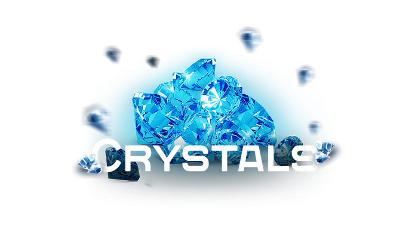
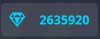
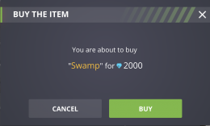
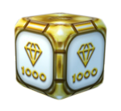
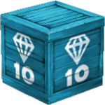
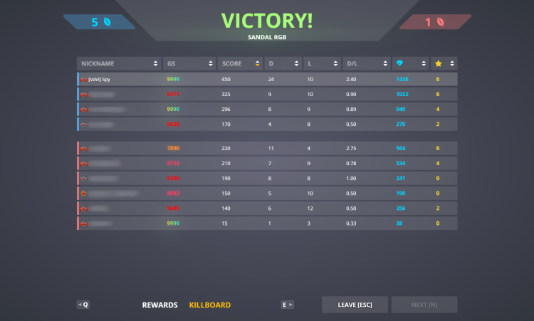
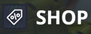
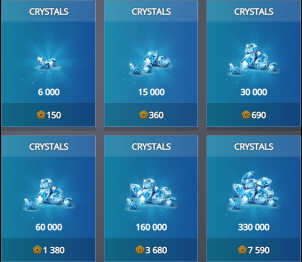

水晶：游戏中的货币
水晶是游戏的主要货币单位。
目前，水晶用于购买和升级底盘、炮塔、无人机、防御模块
道具、迷彩、礼物和偶尔的惊喜物品——通常与游戏中的假期或特殊日子相关——也可以用水晶购买。
有几种方法可以获得水晶。水晶可以从战斗奖励、任务、幸运礼盒、商店、水晶空投箱中获取。
在屏幕上方可以看到水晶的数量：
水晶可以用来升级你的武器或者在车库购买物品。

例如，您需要 2 000 个水晶才能购买“沼泽”迷彩。
确认购买后，将向您收取所需水晶的数量，所选物品将出现在您的车库中。
如何获得水晶
在战斗中
1.来自用户在战场上丢下或系统随机丢下的金箱子

2.来自在低等级战斗中掉落的水晶箱
(每拾取一个水晶箱可获得10水晶和10经验值)

3.作为战场得分奖励

水晶的分配取决于在战斗中摧毁的坦克数量和获得的积分以及战斗中玩家的等级
在匹配战斗中奖励的水晶是根据您和您的团队的表现来奖励的。
在PRO战斗中，您可以在屏幕的右下角看到由摧毁的坦克数量和得分决定的战斗资金
任务
有时，活动期间的特殊任务可以奖励水晶。
星级挑战
每两周，新的星级挑战挑战就会开始。一些奖励等级包括水晶。
参加比赛和活动
管理部门定期组织竞赛和活动，您可以参加并赢取奖品。关注新闻！
在商店中获得水晶
您可以通过点击大厅中的商店标签来购买水晶


兑换促销代码时，您可能会收到一定数量的水晶作为奖励。
从礼盒中获取它们
打开任何当前可获得的礼盒类型时，都有可能收到水晶。
有趣的事实
直到 2014 年 11 月 20 日，还有另一种获取水晶的方法——在战斗中收集装有水晶（不是金箱子）的盒子。
盒子的面额不同：1、5、10、20、50、100 个水晶。
经过一番实验，最终决定将删除装有水晶的盒子，将释放出来的水晶直接送到战斗基金。
2020 年 6 月 4 日，水晶盒重新投入战斗，征募到军士长的军衔。
这些盒子会代替修理工具包以外的补给品，并为拾取它们的玩家的账户增加 10 颗水晶和 10 点经验。